Spraak Transcriptie (januari 2009)
Opbouw van het scherm
Door een gemaakte opname te bekijken, kan de transcriptie worden toegevoegd / worden gewijzigd.
Hieronder is het transcriptie scherm afgebeeld. In dit scherm kunnen de uitspraken worden afgeluisterd en kan de uitspraak worden getranscribeerd. Als een bestand voor de eerste keer wordt bekeken / afgeluisterd, is het raadzaam allereerst de juiste stukken van het geluid te selecteren, dit maakt het achteraf bekijken / beluisteren veel sneller en prettiger.
Links een lijst met doelwoorden, door een woord te selecteren in de lijst, wordt de uitgesproken tekst afgespeeld. Wordt op een andere wijze een doelwoord geselecteerd dan loopt de lijst synchroon mee. Mocht het doelwoord in het protocol bestand ontbreken, dat wordt in de lijst de naam van het gebruikte plaatje weergegeven, zoals hier bijvoorbeeld het woord "wip" :
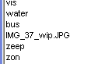
Centraal op het scherm wordt het geluidsignaal afgebeeld. De grootte van het afgebeelde signaal (niet van het echte geluid-niveau ) kan met de schuifbalk aan de rechterzijde worden ingesteld. Een nieuwe instelling wordt pas actief zodra het eerstvolgende geluid wordt afgespeeld.
Onder het grafisch venster de besturingsknoppen, waarbij voor iedere knop ook een toetsenbord commando bestaat.
En rechts-onder de transcriptie velden.
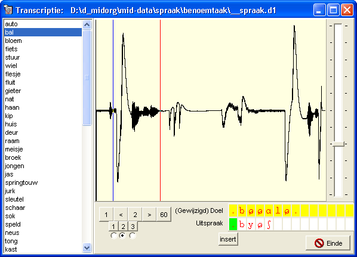
Selecteren geluidsfragment
Het selecteren van het geluid bestaat uit 2 gedeelten,
Besturings knoppen en toetsen
De knoppen worden dynamisch aangepast aan de eigenschappen van het geselecteerde item. Links zien we het eerste item, waar geen alternatieve of herhalingen zijn uitgevoerd. Rechts zien het tweede item, waarbij 3 sub-opnamen zijn gemaakt. De keuzerondjes geven aan welk van de sub-opnamen als default wordt geselecteerd.
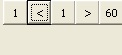 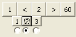
Grafisch Display
Het grafisch display geeft het geluid grafisch weer, volgens de min-max methode. Aan het begin van ieder signaal stukje wordt 0.5 seconde extra toegevoegd, omdat als het kind erg snel reageert (en het programma toevallig wat langzamer) op een plaatje, de beginklank wordt gemist. Dit betekent dat in de meeste gevallen de eerste halve seconde nog geluid is van de vorige opname.
Er kunnen 2 markers (blauwe lijn links en rode lijn rechts) worden geplaatst, welke dienen als selectie voor het te af te spelen geluid. Deze markers worden bij het geluids bestand bewaard. Tijdens het afspelen wordt de actuele locatie in het geluidsbestand weergeven met een paarse marker.
De startmarker = linkse = blauw kan worden geplaatst te slepen met de linker muistoets.
De eindmarker = rechts = rood kan worden geplaatst met de middel- of rechter nuistoets.
Transcriptie
Als de transcriptie de eerste keer wordt uitgevoerd worden automatisch alle doelwoorden als uitsprak ingevuld, zodat enkel de foute uitspraken behoeven te worden ingevoerd. Het groene veld in de uitspraak geeft de cursor aan. Als de uitspraak regel geen focus heeft, kleurt de cursor geel. In principe proberen alle akties na afloop het focus op de uitspraak regel te zetten, zodat een soepele toetsenbord bediening mogelijk wordt.
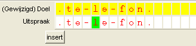
Betekenis van de toetsen
De betekenis van de toetsen is bovenaan in dit document geplaatst, omdat dit de meest gewenste naslag informatie bevat, nadat enige ervaring met het programma is opgedaan.
|
Toets |
Omschrijving |
|
Pijl Links Pijl Rechts |
Verplaats de cursor naar links / rechts |
|
Pijl Omhoog |
Invoegen van een spatie in het doelwoord (omdat in de feitelijke uitspraak extra klanken zijn waargenomen) |
|
Pijl Omlaag |
Verwijderen van een spatie in het gemodificeerde doelwoord |
|
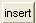 |
Normaal gesproken staat het editten in de overwrite-mode, door het indrukken van deze toets, wordt overgegaan naar de insert-mode. |
|
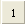 Home |
Spring naar het eerste item en speel het (geselecteerde sub-) geluid af |
|
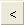 PgUp |
Ga naar het vorige item |
|
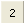 Ins |
Speel het huidige item (in dit voorbeeld 2) nogmaals af |
|
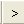 PgDn |
Ga naar het volgende item |
|
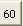 End |
Deze test bevat dus 60 items. Ga naar het laatste item. |
|
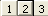 1 ... 3 |
Dit item heeft 3 subitems (kunnen zowel alternatieven als herhalingen zijn). Speel het geselecteerde subitem af (zonder de selectie te wijzigen !! ) |
|
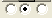 Shift of Ctrl 1 .. 3 |
Bij dit item is subitem 2 geselecteerd als het juiste geluid |
Research Instellingen
Met de knop Dump To Protocol, kan de ingevoerde uitspraak worden opgeslagen als het doelwoord in het protocol bestand. Voor dat deze actie ook daadwerkelijk wordt uitgevoerd, wordt om een extra bevestiging gevraagd.
Met de knop Analyse, kunnen andere analyses dan de standaard analyse worden uitgevoerd.
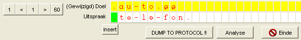